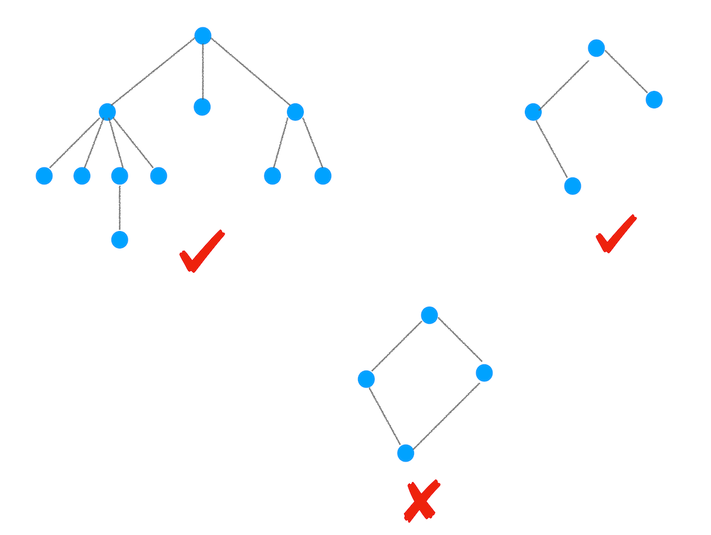
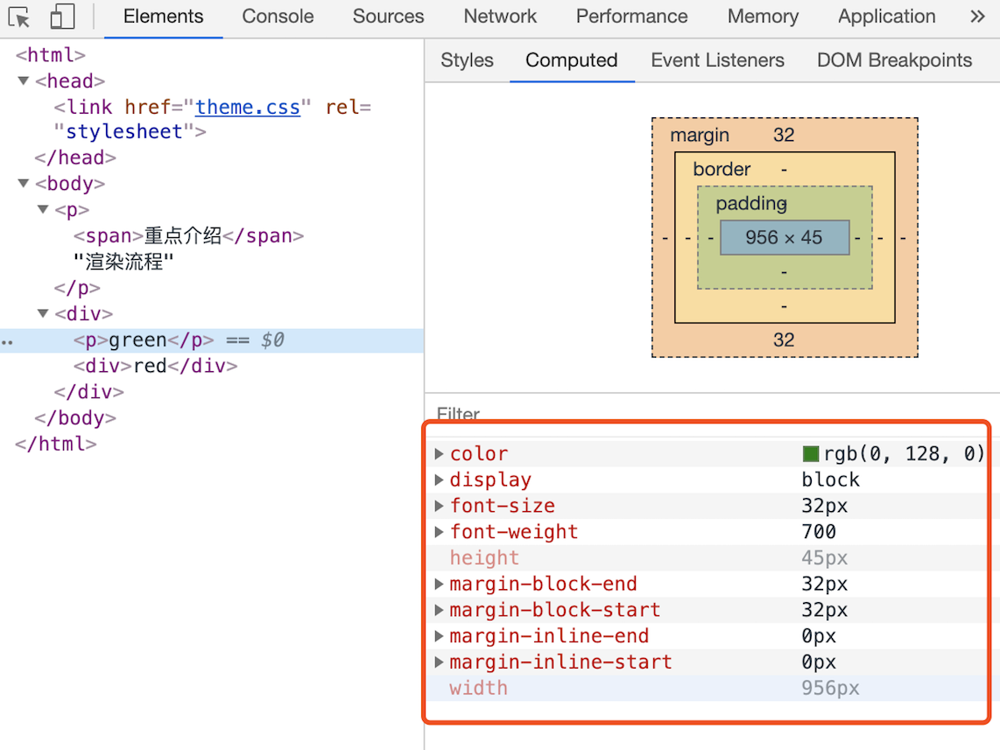

<!DOCTYPE html>


<html lang="zh">


<head>
  <meta charset="utf-8" />
   
  <meta name="keywords" content="hexo blog" />
   
  <meta name="description" content="young blog write my world" />
  
  <meta name="viewport" content="width=device-width, initial-scale=1, maximum-scale=1" />
  <title>
    浏览器渲染进程分析 |  young blog write my world
  </title>
  <meta name="generator" content="hexo-theme-ayer">
  
  <link rel="shortcut icon" href="/favicon.ico" />
  
  
<link rel="stylesheet" href="/dist/main.css">

  
<link rel="stylesheet" href="https://cdn.jsdelivr.net/gh/Shen-Yu/cdn/css/remixicon.min.css">

  
<link rel="stylesheet" href="/css/custom.css">

  
  
<script src="https://cdn.jsdelivr.net/npm/pace-js@1.0.2/pace.min.js"></script>

  
  

  

</head>

</html>

<body>
  <div id="app">
    
      
    <main class="content on">
      <section class="outer">
  <article
  id="post-浏览器渲染进程分析"
  class="article article-type-post"
  itemscope
  itemprop="blogPost"
  data-scroll-reveal
>
  <div class="article-inner">
    
    <header class="article-header">
       
<h1 class="article-title sea-center" style="border-left:0" itemprop="name">
  浏览器渲染进程分析
</h1>
 

    </header>
     
    <div class="article-meta">
      <a href="/2020/09/23/%E6%B5%8F%E8%A7%88%E5%99%A8%E6%B8%B2%E6%9F%93%E8%BF%9B%E7%A8%8B%E5%88%86%E6%9E%90/" class="article-date">
  <time datetime="2020-09-23T05:02:07.000Z" itemprop="datePublished">2020-09-23</time>
</a> 
  <div class="article-category">
    <a class="article-category-link" href="/categories/%E6%B5%8F%E8%A7%88%E5%99%A8/">浏览器</a>
  </div>
  
<div class="word_count">
    <span class="post-time">
        <span class="post-meta-item-icon">
            <i class="ri-quill-pen-line"></i>
            <span class="post-meta-item-text"> Word count:</span>
            <span class="post-count">4.3k</span>
        </span>
    </span>

    <span class="post-time">
        &nbsp; | &nbsp;
        <span class="post-meta-item-icon">
            <i class="ri-book-open-line"></i>
            <span class="post-meta-item-text"> Reading time≈</span>
            <span class="post-count">15 min</span>
        </span>
    </span>
</div>
 
    </div>
      
    <div class="tocbot"></div>


  
    <div class="article-entry" itemprop="articleBody">
       
  <p>浏览器的渲染进程非常重要，不仅是因为Chrome的Blink和V8都是运行在该进程中，更重要的是只有掌握了该进程的知识，你才可以解决一系列相关的问题，比如能熟练使用开发者工具，因为能够理解开发者工具里面大部分项目的含义，能优化页面卡顿问题，使用JavaScript优化动画流程，通过优化样式表来防止强制同步布局，等等。</p>
<h1 id="基础概念"><a href="#基础概念" class="headerlink" title="基础概念"></a>基础概念</h1><p>所以，我们编写的HTML，CSS和JavaScript是如何通过浏览器显示成功能丰富，页面美观的前端页面呢？</p>
<p></p>
<p>从图中可以看出，左边输入的是HTML、CSS、JavaScript数据，这些数据经过中间渲染模块的处理，最终输出为屏幕上的像素。</p>
<p>为了能更好地理解下文，你可以先结合下图快速抓住HTML、CSS和JavaScript的含义：</p>
<p></p>
<ul>
<li><strong>HTML</strong>：HTML的内容是由标记和文本组成。标记也称为标签，每个标签都有自己的语义，浏览器会根据这些标签正确的显示HTML内容，比如p标签就是告诉浏览器新建一个段落，文本内容就是标签里面的内容。</li>
<li><strong>CSS</strong>：层叠样式表，由选择器和属性组成，会把选择器对应的标签来显示CSS的属性，比如color属性，可以改变文本的颜色</li>
<li><strong>JavaScript</strong>：让页面的内容可以灵活起来，比如动态的修改文本的颜色，是浏览器的脚本语言。</li>
</ul>
<p></p>
<p>浏览器的渲染进程内部还是比较复杂的，大致有以下几个字阶段，构建DOM树，样式计算，布局阶段，分层，绘制，分块，光栅化和合成。</p>
<h1 id="DOM树构建"><a href="#DOM树构建" class="headerlink" title="DOM树构建"></a>DOM树构建</h1><p>DOM，全称Document Object Model，文档对象模型，浏览器无法理解HTML，所以第一步就是是将HTML内容转换为DOM树结构，如下图示：</p>
<p></p>
<p>可以发现，树结构和我们现实中的树也是比较类似的，整个渲染进程中会构建多个树。</p>
<p>DOM的构建过程，可参考下图</p>
<h2 id="解析"><a href="#解析" class="headerlink" title="解析"></a>解析</h2><p></p>
<p>不难看出，构建DOM的输入内容是简单的HTML文件，经过HTML解析器解析后，最终输出树状结构的DOM</p>
<p>为了更加直观地理解DOM树，你可以打开Chrome的“开发者工具”，选择“Console”标签来打开控制台，然后在控制台里面输入“document”后回车，这样你就能看到一个完整的DOM树结构，如下图所示：</p>
<p></p>
<h2 id="DOM特点"><a href="#DOM特点" class="headerlink" title="DOM特点"></a>DOM特点</h2><p>图中的document就是DOM结构，原来DOM和HTML机构一模一样，唯一不同的是，DOM是保存在内存中的树状结构，我们可以通过Javascript来进行动态修改</p>
<figure class="highlight plain"><table><tr><td class="gutter"><pre><span class="line">1</span><br></pre></td><td class="code"><pre><span class="line">document.getElementsByTagName(&quot;p&quot;)[0].innerText &#x3D; &quot;black&quot;</span><br></pre></td></tr></table></figure>

<p>这行代码的作用是把第一个<code>&lt;p&gt;</code>标签的内容修改为black，具体执行结果你可以参考下图：</p>
<p></p>
<p>从图中可以看出，在执行了一段修改第一个<code>&lt;p&gt;</code>标签的JavaScript代码后，DOM的第一个p节点的内容成功被修改，同时页面中的内容也被修改了</p>
<p>所以，HTML是我们DOM的最初来源，后续的所有操作都是基于内存中的DOM来进行操作了。</p>
<h1 id="样式计算"><a href="#样式计算" class="headerlink" title="样式计算"></a>样式计算</h1><p>样式计算的目的是为了计算出DOM节点中每个元素的具体样式，可以分为三步</p>
<h2 id="CSS转换"><a href="#CSS转换" class="headerlink" title="CSS转换"></a>CSS转换</h2><p></p>
<p>CSS样式来源主要有三种</p>
<ul>
<li>通过link引用的外部CSS文件</li>
<li>style标签内的样式文件</li>
<li>元素的style属性内嵌的CSS</li>
</ul>
<p>和HTML文件一样，浏览器也不认识CSS，所以渲染引擎在接收到CSS文件后通过一系列转换，变成浏览器可理解的结构，styleSheets</p>
<p>同样，我们可以通过document.styleSheets查看结构</p>
<p></p>
<p>同样的，我们JavaScript可以对这些属性进行修改操作</p>
<h2 id="标准化属性值"><a href="#标准化属性值" class="headerlink" title="标准化属性值"></a>标准化属性值</h2><p>要理解什么是属性值标准化，你可以看下面这样一段CSS文本</p>
<figure class="highlight plain"><table><tr><td class="gutter"><pre><span class="line">1</span><br><span class="line">2</span><br><span class="line">3</span><br><span class="line">4</span><br><span class="line">5</span><br><span class="line">6</span><br></pre></td><td class="code"><pre><span class="line">body &#123; font-size: 2em &#125;</span><br><span class="line">p &#123;color:blue;&#125;</span><br><span class="line">span  &#123;display: none&#125;</span><br><span class="line">div &#123;font-weight: bold&#125;</span><br><span class="line">div  p &#123;color:green;&#125;</span><br><span class="line">div &#123;color:red; &#125;</span><br></pre></td></tr></table></figure>

<p>可以看到很多属性值比如2em，blue等都是不被渲染引擎所理解的，所以需要将这些值进行标准化，渲染引擎才能正常计算</p>
<p></p>
<p>从图中可以看到，2em解析成了32px，red被解析成了rgb(255,0,0)，bold被解析成了700等</p>
<h2 id="计算DOM节点样式"><a href="#计算DOM节点样式" class="headerlink" title="计算DOM节点样式"></a>计算DOM节点样式</h2><p>现在的样式属性已经标准化了，接下来就需要计算DOM树中每个节点对应的样式了</p>
<ul>
<li>首先会涉及到CSS的继承规则和层叠规则</li>
</ul>
<h3 id="CSS继承"><a href="#CSS继承" class="headerlink" title="CSS继承"></a>CSS继承</h3><p>CSS继承就是子节点包含了父节点的样式属性，比如下面的CSS样式</p>
<figure class="highlight plain"><table><tr><td class="gutter"><pre><span class="line">1</span><br><span class="line">2</span><br><span class="line">3</span><br><span class="line">4</span><br><span class="line">5</span><br></pre></td><td class="code"><pre><span class="line">body &#123; font-size: 20px &#125;</span><br><span class="line">p &#123;color:blue;&#125;</span><br><span class="line">span  &#123;display: none&#125;</span><br><span class="line">div &#123;font-weight: bold;color:red&#125;</span><br><span class="line">div  p &#123;color:green;&#125;</span><br></pre></td></tr></table></figure>

<p>最终解析出来的DOM属性为：</p>
<p></p>
<p>从图中可以看出，所有子节点都继承了父节点样式。比如body节点的font-size属性是20，那body节点下面的所有节点的font-size都等于20，当然不是所有的属性都会被继承。</p>
<p>我们可以打开调试工具，选择element选项</p>
<p></p>
<p>这个界面展示的信息很丰富，大致可描述为如下</p>
<ul>
<li>首先，可以选择要查看的元素的样式（位于图中的区域2中），在图中的第1个区域中点击对应的元素元素，就可以了下面的区域查看该元素的样式了。比如这里我们选择的元素是<code>&lt;p&gt;</code>标签，位于<code>html.body.div.</code>这个路径下面</li>
<li>其次，可以从样式来源（位于图中的区域3中）中查看样式的具体来源信息，看看是来源于样式文件，还是来源于UserAgent样式表。这里需要特别提下UserAgent样式，它是浏览器提供的一组默认样式，如果你不提供任何样式，默认使用的就是UserAgent样式。</li>
<li>最后，可以通过区域2和区域3来查看样式继承的具体过程。</li>
</ul>
<h3 id="层叠"><a href="#层叠" class="headerlink" title="层叠"></a>层叠</h3><p>层叠是CSS的一个基本特征，它是一个定义了如何合并来自多个源的属性值的算法</p>
<p>它是CSS的核心地位，因为样式可以通过设置class，id，父子等等方式设置引用，最后会根据一套公式进行计算得出真正生效的样式</p>
<p>总之，通过继承和层叠，会得到出标签最终的真正样式，可以打开Chrome的“开发者工具”，选择第一个“element”标签，然后再选择“Computed”子标签，如下图所示：</p>
<p></p>
<h1 id="布局阶段"><a href="#布局阶段" class="headerlink" title="布局阶段"></a>布局阶段</h1><p>现在，我们通过HTML构建了DOM树，通过CSS计算出了DOM树中每个节点的元素属性。接下来，我们需要对这些节点进行位置的计算，也即是布局。</p>
<p>Chrome在布局阶段需要完成两个工作，<u>创建布局树和布局计算</u></p>
<h2 id="创建布局树"><a href="#创建布局树" class="headerlink" title="创建布局树"></a>创建布局树</h2><p>你可能注意到了DOM树还含有很多不可见的元素，比如head标签，还有使用了<code>display:none</code>属性的元素。所以在显示之前，我们还要额外地构建一棵只包含<strong>可见元素布局树</strong>。</p>
<p></p>
<p>构建布局树，主要是为了生成真正有用的节点元素</p>
<ul>
<li>遍历DOM树中的所有可见节点，并把这些节点加到布局中；</li>
<li>不可见阶段会被忽略掉，比如head标签中的内容，display：none的元素也不会添加到布局树中</li>
</ul>
<h2 id="布局计算"><a href="#布局计算" class="headerlink" title="布局计算"></a>布局计算</h2><p>有了布局树后，开始进行位置计算，等计算完成后，这里位置信息会直接写到布局树中。所以布局树既是输入内容也是输出内容，这是布局阶段一个不合理的地方，因为在布局阶段并没有清晰地将输入内容和输出内容区分开来。针对这个问题，Chrome团队正在重构布局代码，下一代布局系统叫LayoutNG，试图更清晰地分离输入和输出，从而让新设计的布局算法更加简单。</p>
<h1 id="小结"><a href="#小结" class="headerlink" title="小结"></a>小结</h1><p></p>
<p>可以看到，目前已经完成了前三步</p>
<ul>
<li>1.HTML解析成DOM树</li>
<li>2.CSS解析成styleSheets，计算得到DOM树的样式</li>
<li>3.构建布局树，并计算出位置信息</li>
</ul>
<h1 id="分层"><a href="#分层" class="headerlink" title="分层"></a>分层</h1><p>有了具体的位置信息后，还不会进行绘制操作，因为页面中有很多复杂的效果，比如3D动画，页面滚动，z-index等，为了更加方便的实现这些效果，引擎还需要<strong>为特点的节点生成专用的图层，并生成对应的图层树（LayerTree）</strong></p>
<h2 id="图层树"><a href="#图层树" class="headerlink" title="图层树"></a>图层树</h2><p>可以打开Chrome的“开发者工具”，选择“Layers”标签，就可以可视化页面的分层情况，如下图所示</p>
<p></p>
<p>现在你知道了浏览器的页面实际上被分成了很多图层，这些图层叠加后合成了最终的页面。下面我们再来看看这些图层和布局树节点之间的关系，如文中图所示：</p>
<p></p>
<p>通常情况下，并不是每个节点都独创一个图层，如果一个节点没有独有的图层，那么会从属于父节点的图层，比如上图中span标签没有专属图层，会依附于父节点的图层。但是不管怎么样，每个节点都会直接或者间接的从属于某个图层。</p>
<p>那么，什么情况下，渲染引擎会为该节点重新建一个图层呢？</p>
<ul>
<li><strong>拥有层叠上下文属性的元素会被提升为单独的一层</strong></li>
</ul>
<p></p>
<p>页面是二维平面，但是层叠上下文属性能够让HTML元素具有三维的概念。这些HTML元素按照优先级排列在Z轴上，从图中可以看出，定位，z-index，透明属性和CSS滤镜都会提升图层</p>
<ul>
<li>需要裁剪（clip）的地方也会被创建为图层</li>
</ul>
<p>首先，什么是裁剪，结合下面的代码</p>
<figure class="highlight plain"><table><tr><td class="gutter"><pre><span class="line">1</span><br><span class="line">2</span><br><span class="line">3</span><br><span class="line">4</span><br><span class="line">5</span><br><span class="line">6</span><br><span class="line">7</span><br><span class="line">8</span><br><span class="line">9</span><br><span class="line">10</span><br><span class="line">11</span><br><span class="line">12</span><br><span class="line">13</span><br><span class="line">14</span><br><span class="line">15</span><br></pre></td><td class="code"><pre><span class="line">&lt;style&gt;</span><br><span class="line">      div &#123;</span><br><span class="line">            width: 200;</span><br><span class="line">            height: 200;</span><br><span class="line">            overflow:auto;</span><br><span class="line">            background: gray;</span><br><span class="line">        &#125; </span><br><span class="line">&lt;&#x2F;style&gt;</span><br><span class="line">&lt;body&gt;</span><br><span class="line">    &lt;div &gt;</span><br><span class="line">        &lt;p&gt;所以元素有了层叠上下文的属性或者需要被剪裁，那么就会被提升成为单独一层，你可以参看下图：&lt;&#x2F;p&gt;</span><br><span class="line">        &lt;p&gt;从上图我们可以看到，document层上有A和B层，而B层之上又有两个图层。这些图层组织在一起也是一颗树状结构。&lt;&#x2F;p&gt;</span><br><span class="line">        &lt;p&gt;图层树是基于布局树来创建的，为了找出哪些元素需要在哪些层中，渲染引擎会遍历布局树来创建层树（Update LayerTree）。&lt;&#x2F;p&gt; </span><br><span class="line">    &lt;&#x2F;div&gt;</span><br><span class="line">&lt;&#x2F;body&gt;</span><br></pre></td></tr></table></figure>

<p>在这里我们把div的大小限定为200 * 200像素，而div里面的文字内容比较多，文字所显示的区域肯定会超出200 * 200的面积，这时候就产生了剪裁，渲染引擎会把裁剪文字内容的一部分用于显示在div区域，下图是运行时的执行结果</p>
<p></p>
<p>出现这种裁剪的情况，引擎会为文字单独创建一个图层，如果出现滚动条，滚动条也会被创建单独的图层，如下图示：</p>
<p></p>
<p>所以说，基于上下文属性的节点和出现裁剪的节点会单独创建图层</p>
<h1 id="图层绘制"><a href="#图层绘制" class="headerlink" title="图层绘制"></a>图层绘制</h1><p>在完成图层树的构建后，渲染引擎会对图层树中每个图层进行绘制。绘制的过程就是把图层信息拆分成一个个很小的绘制指令，然后再把这些绘制指令按照顺序组成一个待绘制列表，如下图示：</p>
<p></p>
<p>从图中可以看出，绘制列表中的指令其实特别简单，就是执行一个简单的绘制操作，比如绘制粉红色背景或者黑色的线，而一个元素通常需要几个绘制指令才能完成绘制操作，因为每个元素一般包括背景，前景，边框等都需要单独的指令去绘制。</p>
<p>所以，<strong>在图层绘制阶段，输出的内容就是这些待绘制列表</strong></p>
<p>的“Layers”标签，选择“document”层，来实际体验下绘制列表，如下图所示：</p>
<p></p>
<p>在该图中，区域1就是document的绘制列表，拖动区域2中的进度条可以重现列表的绘制过程。</p>
<h1 id="栅格化操作"><a href="#栅格化操作" class="headerlink" title="栅格化操作"></a>栅格化操作</h1><p>图层绘制列表只是用来记录绘制顺序和绘制指令的列表，实际的绘制操作是由渲染引擎中的合成线程来完成的。下图是渲染主线程和合成线程之间的关系</p>
<p></p>
<p>可以看到，当绘制列表准备好后，渲染主线程会将列表提交（commit）给合成线程进行处理。那么合成线程又是怎么处理的呢？</p>
<h2 id="视口viewport"><a href="#视口viewport" class="headerlink" title="视口viewport"></a>视口viewport</h2><blockquote>
<ul>
<li>通常一个页面可能很大，但是用户只能看到其中的一部分，我们把用户可以看到的这个部分叫做视口（viewport）。</li>
</ul>
</blockquote>
<p></p>
<p>对于很长的页面，通过视口，我们只能看到很小的一部分内容，所在在这种情况下，如果绘制出所有图层的话，就会产生太大的开销，而且非常没有必要。</p>
<h2 id="位图"><a href="#位图" class="headerlink" title="位图"></a>位图</h2><p>基于这个原因，合成线程会将图层划分成许多图块（tile），这些块通常是256，512等大小的矩形，如下图示：</p>
<p></p>
<p>然后合成线程会按照视口附近的图块生成位图，<strong>将图块转换为位图的操作就叫栅格化</strong>，图块是栅格化操作的最小单位。</p>
<p>同时，渲染进程会维护一个栅格化的线程池，所有的栅格化操作都是在该线程池中执行的，如下图示：</p>
<p></p>
<h2 id="GPU加速"><a href="#GPU加速" class="headerlink" title="GPU加速"></a>GPU加速</h2><p>通常情况下，栅格化都会通过GPU进行加速生成，使用GPU生成位图的过程叫做快速栅格化，或者叫GPU栅格化，生成的位图被保存在GPU的内存中。</p>
<p>GPU运行在GPU进程中，这里就会涉及到进程间通信</p>
<p></p>
<p>从图中可以看出，渲染进程把生成位图的指令发送给GPU进程，然后在GPU进程中生成位图，并保存在GPU的内存中。</p>
<h1 id="合成和显示"><a href="#合成和显示" class="headerlink" title="合成和显示"></a>合成和显示</h1><p>一旦所有图块都被光栅化，合成线程就会生成一个绘制图块的命令——“DrawQuad”，然后将该命令提交给浏览器进程。</p>
<p>浏览器进程里面有一个叫viz的组件，用来接收合成线程发过来的DrawQuad命令，然后根据DrawQuad命令，将其页面内容绘制到内存中，最后再将内存显示在屏幕上。</p>
<p>到这里，经过这一系列的阶段，编写好的HTML、CSS、JavaScript等文件，经过浏览器就会显示出漂亮的页面了。</p>
<h1 id="总结"><a href="#总结" class="headerlink" title="总结"></a>总结</h1><p>整个渲染进程主要步骤为：DOM，StyleSheets，布局树，图层树，绘制图层，绘制列表，栅格化，合成和显示。下面用一张图来总结</p>
<p></p>
<p><strong>根据上图，一个完整的渲染流程可以总结为：</strong></p>
<ul>
<li>渲染进程将HTML内容转换为可以读懂的DOM结构</li>
<li>渲染进程将CSS转为StyleSheets，并计算DOM节点的样式</li>
<li>创建布局树，并计算布局元素的信息</li>
<li>对布局树进行分层，并生成分层树</li>
<li>为每个图层生成绘制列表，并提交给合成线程</li>
<li>合成线程借助GPU将位图进行栅格化，生成位图</li>
<li>合成线程发送绘制图块命令DrawQuad给浏览器进程</li>
<li>浏览器进程根据DrawQuad消息，合成并显示</li>
</ul>
<h1 id="相关概念补充"><a href="#相关概念补充" class="headerlink" title="相关概念补充"></a>相关概念补充</h1><h2 id="重排"><a href="#重排" class="headerlink" title="重排"></a>重排</h2><p></p>
<p>重排就是改动了HTML元素，此时会重新更新DOM，渲染流程会重新走一遍，开销最大。</p>
<h2 id="重绘"><a href="#重绘" class="headerlink" title="重绘"></a>重绘</h2><p></p>
<p>重绘是修改了元素属性，那么布局阶段将不会执行，因为没有引起位置的变化，直接进入绘制阶段。然后进入一系列的子阶段。<strong>相较于重排操作，重绘省去了布局和分层阶段，所以执行效率会比重排操作要高一些</strong>。</p>
<h2 id="合成"><a href="#合成" class="headerlink" title="合成"></a>合成</h2><p>如果跳过了布局和绘制，直接进入合成阶段，比如CSS的动画操作，这可以避开重排和重绘阶段，直接在非主线程上执行合成动画操作。这样的效率是最高的，因为是在非主线程上合成，并没有占用主线程的资源，另外也避开了布局和绘制两个子阶段，所以相对于重绘和重排，合成能大大提升绘制效率。</p>
 
      <!-- reward -->
      
      <div id="reword-out">
        <div id="reward-btn">
          Donate
        </div>
      </div>
      
    </div>
    

    <!-- copyright -->
    
    <div class="declare">
      <ul class="post-copyright">
        <li>
          <i class="ri-copyright-line"></i>
          <strong>Copyright： </strong>
          
          Copyright is owned by the author. For commercial reprints, please contact the author for authorization. For non-commercial reprints, please indicate the source.
          
        </li>
      </ul>
    </div>
    
    <footer class="article-footer">
       
<div class="share-btn">
      <span class="share-sns share-outer">
        <i class="ri-share-forward-line"></i>
        分享
      </span>
      <div class="share-wrap">
        <i class="arrow"></i>
        <div class="share-icons">
          
          <a class="weibo share-sns" href="javascript:;" data-type="weibo">
            <i class="ri-weibo-fill"></i>
          </a>
          <a class="weixin share-sns wxFab" href="javascript:;" data-type="weixin">
            <i class="ri-wechat-fill"></i>
          </a>
          <a class="qq share-sns" href="javascript:;" data-type="qq">
            <i class="ri-qq-fill"></i>
          </a>
          <a class="douban share-sns" href="javascript:;" data-type="douban">
            <i class="ri-douban-line"></i>
          </a>
          <!-- <a class="qzone share-sns" href="javascript:;" data-type="qzone">
            <i class="icon icon-qzone"></i>
          </a> -->
          
          <a class="facebook share-sns" href="javascript:;" data-type="facebook">
            <i class="ri-facebook-circle-fill"></i>
          </a>
          <a class="twitter share-sns" href="javascript:;" data-type="twitter">
            <i class="ri-twitter-fill"></i>
          </a>
          <a class="google share-sns" href="javascript:;" data-type="google">
            <i class="ri-google-fill"></i>
          </a>
        </div>
      </div>
</div>

<div class="wx-share-modal">
    <a class="modal-close" href="javascript:;"><i class="ri-close-circle-line"></i></a>
    <p>扫一扫，分享到微信</p>
    <div class="wx-qrcode">
      
    </div>
</div>

<div id="share-mask"></div>  
  <ul class="article-tag-list" itemprop="keywords"><li class="article-tag-list-item"><a class="article-tag-list-link" href="/tags/%E6%B5%8F%E8%A7%88%E5%99%A8/" rel="tag">浏览器</a></li><li class="article-tag-list-item"><a class="article-tag-list-link" href="/tags/%E8%BF%9B%E9%98%B6/" rel="tag">进阶</a></li></ul>

    </footer>
  </div>

   
  <nav class="article-nav">
    
      <a href="/2020/09/27/%E6%B5%8F%E8%A7%88%E5%99%A8%E4%B8%ADJavaScript%E7%9A%84%E6%89%A7%E8%A1%8C%E6%9C%BA%E5%88%B6/" class="article-nav-link">
        <strong class="article-nav-caption">上一篇</strong>
        <div class="article-nav-title">
          
            浏览器中JavaScript的执行机制
          
        </div>
      </a>
    
    
      <a href="/2020/09/21/chrome%E6%9E%B6%E6%9E%84%E6%BC%94%E8%BF%9B/" class="article-nav-link">
        <strong class="article-nav-caption">下一篇</strong>
        <div class="article-nav-title">chrome架构演进</div>
      </a>
    
  </nav>

   
<!-- valine评论 -->
<div id="vcomments-box">
  <div id="vcomments"></div>
</div>
<script src="//cdn1.lncld.net/static/js/3.0.4/av-min.js"></script>
<script src="https://cdn.jsdelivr.net/npm/valine@1.4.14/dist/Valine.min.js"></script>
<script>
  new Valine({
    el: "#vcomments",
    app_id: "",
    app_key: "",
    path: window.location.pathname,
    avatar: "monsterid",
    placeholder: "给我的文章加点评论吧~",
    recordIP: true,
  });
  const infoEle = document.querySelector("#vcomments .info");
  if (infoEle && infoEle.childNodes && infoEle.childNodes.length > 0) {
    infoEle.childNodes.forEach(function (item) {
      item.parentNode.removeChild(item);
    });
  }
</script>
<style>
  #vcomments-box {
    padding: 5px 30px;
  }

  @media screen and (max-width: 800px) {
    #vcomments-box {
      padding: 5px 0px;
    }
  }

  #vcomments-box #vcomments {
    background-color: #fff;
  }

  .v .vlist .vcard .vh {
    padding-right: 20px;
  }

  .v .vlist .vcard {
    padding-left: 10px;
  }
</style>

 
     
</article>

</section>
      <footer class="footer">
  <div class="outer">
    <ul>
      <li>
        Copyrights &copy;
        2015-2020
        <i class="ri-heart-fill heart_icon"></i> YOUNG
      </li>
    </ul>
    <ul>
      <li>
        
        
        
        Powered by <a href="https://hexo.io" target="_blank">Hexo</a>
        <span class="division">|</span>
        Theme - <a href="https://github.com/Shen-Yu/hexo-theme-ayer" target="_blank">Ayer</a>
        
      </li>
    </ul>
    <ul>
      <li>
        
        
        <span>
  <span><i class="ri-user-3-fill"></i>Visitors:<span id="busuanzi_value_site_uv"></span></s>
  <span class="division">|</span>
  <span><i class="ri-eye-fill"></i>Views:<span id="busuanzi_value_page_pv"></span></span>
</span>
        
      </li>
    </ul>
    <ul>
      
    </ul>
    <ul>
      
    </ul>
    <ul>
      <li>
        <!-- cnzz统计 -->
        
        <script type="text/javascript" src=''></script>
        
      </li>
    </ul>
  </div>
</footer>
      <div class="float_btns">
        <div class="totop" id="totop">
  <i class="ri-arrow-up-line"></i>
</div>

<div class="todark" id="todark">
  <i class="ri-moon-line"></i>
</div>

      </div>
    </main>
    <aside class="sidebar on">
      <button class="navbar-toggle"></button>
<nav class="navbar">
  
  <div class="logo">
    <a href="/"></a>
  </div>
  
  <ul class="nav nav-main">
    
    <li class="nav-item">
      <a class="nav-item-link" href="/">主页</a>
    </li>
    
    <li class="nav-item">
      <a class="nav-item-link" href="/archives">归档</a>
    </li>
    
    <li class="nav-item">
      <a class="nav-item-link" href="/categories">分类</a>
    </li>
    
    <li class="nav-item">
      <a class="nav-item-link" href="/tags">标签</a>
    </li>
    
    <li class="nav-item">
      <a class="nav-item-link" href="/tags/%E6%97%85%E8%A1%8C/">旅行</a>
    </li>
    
    <li class="nav-item">
      <a class="nav-item-link" target="_blank" rel="noopener" href="http://shenyu-vip.lofter.com">摄影</a>
    </li>
    
    <li class="nav-item">
      <a class="nav-item-link" href="/friends">友链</a>
    </li>
    
    <li class="nav-item">
      <a class="nav-item-link" href="/2019/about">关于我</a>
    </li>
    
  </ul>
</nav>
<nav class="navbar navbar-bottom">
  <ul class="nav">
    <li class="nav-item">
      
      <a class="nav-item-link nav-item-search"  title="Search">
        <i class="ri-search-line"></i>
      </a>
      
      
      <a class="nav-item-link" target="_blank" href="/atom.xml" title="RSS Feed">
        <i class="ri-rss-line"></i>
      </a>
      
    </li>
  </ul>
</nav>
<div class="search-form-wrap">
  <div class="local-search local-search-plugin">
  <input type="search" id="local-search-input" class="local-search-input" placeholder="Search...">
  <div id="local-search-result" class="local-search-result"></div>
</div>
</div>
    </aside>
    <script>
      if (window.matchMedia("(max-width: 768px)").matches) {
        document.querySelector('.content').classList.remove('on');
        document.querySelector('.sidebar').classList.remove('on');
      }
    </script>
    <div id="mask"></div>

<!-- #reward -->
<div id="reward">
  <span class="close"><i class="ri-close-line"></i></span>
  <p class="reward-p"><i class="ri-cup-line"></i>请我喝杯咖啡吧~</p>
  <div class="reward-box">
    
    
  </div>
</div>
    
<script src="/js/jquery-2.0.3.min.js"></script>


<script src="/js/lazyload.min.js"></script>

<!-- Tocbot -->


<script src="/js/tocbot.min.js"></script>

<script>
  tocbot.init({
    tocSelector: '.tocbot',
    contentSelector: '.article-entry',
    headingSelector: 'h1, h2, h3, h4, h5, h6',
    hasInnerContainers: true,
    scrollSmooth: true,
    scrollContainer: 'main',
    positionFixedSelector: '.tocbot',
    positionFixedClass: 'is-position-fixed',
    fixedSidebarOffset: 'auto'
  });
</script>

<script src="https://cdn.jsdelivr.net/npm/jquery-modal@0.9.2/jquery.modal.min.js"></script>
<link rel="stylesheet" href="https://cdn.jsdelivr.net/npm/jquery-modal@0.9.2/jquery.modal.min.css">
<script src="https://cdn.jsdelivr.net/npm/justifiedGallery@3.7.0/dist/js/jquery.justifiedGallery.min.js"></script>

<script src="/dist/main.js"></script>

<!-- ImageViewer -->

<!-- Root element of PhotoSwipe. Must have class pswp. -->
<div class="pswp" tabindex="-1" role="dialog" aria-hidden="true">

    <!-- Background of PhotoSwipe. 
         It's a separate element as animating opacity is faster than rgba(). -->
    <div class="pswp__bg"></div>

    <!-- Slides wrapper with overflow:hidden. -->
    <div class="pswp__scroll-wrap">

        <!-- Container that holds slides. 
            PhotoSwipe keeps only 3 of them in the DOM to save memory.
            Don't modify these 3 pswp__item elements, data is added later on. -->
        <div class="pswp__container">
            <div class="pswp__item"></div>
            <div class="pswp__item"></div>
            <div class="pswp__item"></div>
        </div>

        <!-- Default (PhotoSwipeUI_Default) interface on top of sliding area. Can be changed. -->
        <div class="pswp__ui pswp__ui--hidden">

            <div class="pswp__top-bar">

                <!--  Controls are self-explanatory. Order can be changed. -->

                <div class="pswp__counter"></div>

                <button class="pswp__button pswp__button--close" title="Close (Esc)"></button>

                <button class="pswp__button pswp__button--share" style="display:none" title="Share"></button>

                <button class="pswp__button pswp__button--fs" title="Toggle fullscreen"></button>

                <button class="pswp__button pswp__button--zoom" title="Zoom in/out"></button>

                <!-- Preloader demo http://codepen.io/dimsemenov/pen/yyBWoR -->
                <!-- element will get class pswp__preloader--active when preloader is running -->
                <div class="pswp__preloader">
                    <div class="pswp__preloader__icn">
                        <div class="pswp__preloader__cut">
                            <div class="pswp__preloader__donut"></div>
                        </div>
                    </div>
                </div>
            </div>

            <div class="pswp__share-modal pswp__share-modal--hidden pswp__single-tap">
                <div class="pswp__share-tooltip"></div>
            </div>

            <button class="pswp__button pswp__button--arrow--left" title="Previous (arrow left)">
            </button>

            <button class="pswp__button pswp__button--arrow--right" title="Next (arrow right)">
            </button>

            <div class="pswp__caption">
                <div class="pswp__caption__center"></div>
            </div>

        </div>

    </div>

</div>

<link rel="stylesheet" href="https://cdn.jsdelivr.net/npm/photoswipe@4.1.3/dist/photoswipe.min.css">
<link rel="stylesheet" href="https://cdn.jsdelivr.net/npm/photoswipe@4.1.3/dist/default-skin/default-skin.min.css">
<script src="https://cdn.jsdelivr.net/npm/photoswipe@4.1.3/dist/photoswipe.min.js"></script>
<script src="https://cdn.jsdelivr.net/npm/photoswipe@4.1.3/dist/photoswipe-ui-default.min.js"></script>

<script>
    function viewer_init() {
        let pswpElement = document.querySelectorAll('.pswp')[0];
        let $imgArr = document.querySelectorAll(('.article-entry img:not(.reward-img)'))

        $imgArr.forEach(($em, i) => {
            $em.onclick = () => {
                // slider展开状态
                // todo: 这样不好，后面改成状态
                if (document.querySelector('.left-col.show')) return
                let items = []
                $imgArr.forEach(($em2, i2) => {
                    let img = $em2.getAttribute('data-idx', i2)
                    let src = $em2.getAttribute('data-target') || $em2.getAttribute('src')
                    let title = $em2.getAttribute('alt')
                    // 获得原图尺寸
                    const image = new Image()
                    image.src = src
                    items.push({
                        src: src,
                        w: image.width || $em2.width,
                        h: image.height || $em2.height,
                        title: title
                    })
                })
                var gallery = new PhotoSwipe(pswpElement, PhotoSwipeUI_Default, items, {
                    index: parseInt(i)
                });
                gallery.init()
            }
        })
    }
    viewer_init()
</script>

<!-- MathJax -->

<!-- Katex -->

<!-- busuanzi  -->


<script src="/js/busuanzi-2.3.pure.min.js"></script>


<!-- ClickLove -->

<!-- ClickBoom1 -->

<!-- ClickBoom2 -->

<!-- CodeCopy -->


<link rel="stylesheet" href="/css/clipboard.css">

<script src="https://cdn.jsdelivr.net/npm/clipboard@2/dist/clipboard.min.js"></script>
<script>
  function wait(callback, seconds) {
    var timelag = null;
    timelag = window.setTimeout(callback, seconds);
  }
  !function (e, t, a) {
    var initCopyCode = function(){
      var copyHtml = '';
      copyHtml += '<button class="btn-copy" data-clipboard-snippet="">';
      copyHtml += '<i class="ri-file-copy-2-line"></i><span>COPY</span>';
      copyHtml += '</button>';
      $(".highlight .code pre").before(copyHtml);
      $(".article pre code").before(copyHtml);
      var clipboard = new ClipboardJS('.btn-copy', {
        target: function(trigger) {
          return trigger.nextElementSibling;
        }
      });
      clipboard.on('success', function(e) {
        let $btn = $(e.trigger);
        $btn.addClass('copied');
        let $icon = $($btn.find('i'));
        $icon.removeClass('ri-file-copy-2-line');
        $icon.addClass('ri-checkbox-circle-line');
        let $span = $($btn.find('span'));
        $span[0].innerText = 'COPIED';
        
        wait(function () { // 等待两秒钟后恢复
          $icon.removeClass('ri-checkbox-circle-line');
          $icon.addClass('ri-file-copy-2-line');
          $span[0].innerText = 'COPY';
        }, 2000);
      });
      clipboard.on('error', function(e) {
        e.clearSelection();
        let $btn = $(e.trigger);
        $btn.addClass('copy-failed');
        let $icon = $($btn.find('i'));
        $icon.removeClass('ri-file-copy-2-line');
        $icon.addClass('ri-time-line');
        let $span = $($btn.find('span'));
        $span[0].innerText = 'COPY FAILED';
        
        wait(function () { // 等待两秒钟后恢复
          $icon.removeClass('ri-time-line');
          $icon.addClass('ri-file-copy-2-line');
          $span[0].innerText = 'COPY';
        }, 2000);
      });
    }
    initCopyCode();
  }(window, document);
</script>


<!-- CanvasBackground -->


    
  </div>
</body>

</html>